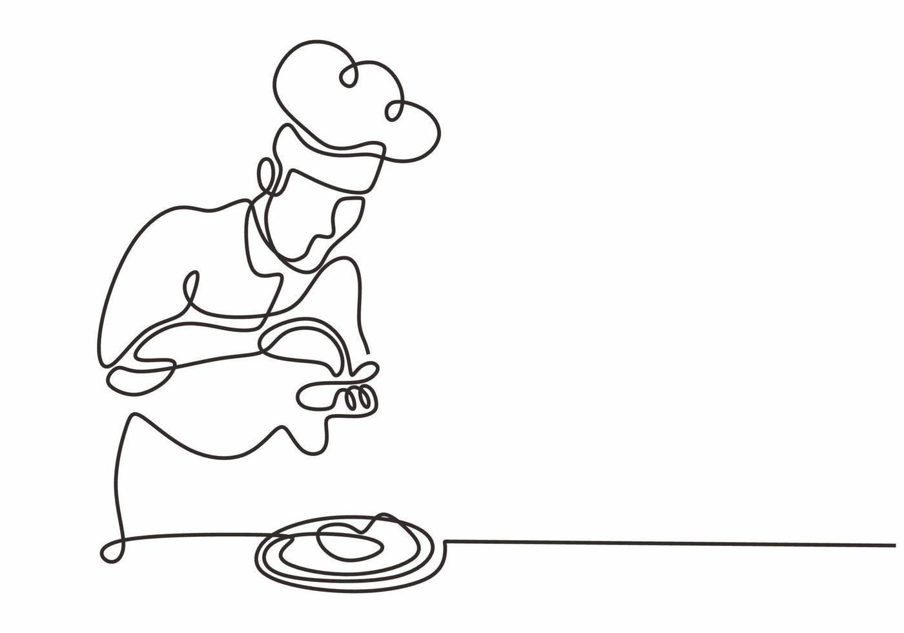

- Preparación
- Reune los ingredientes
- Un huevo
- Aceite
- Sal
- Sartén
- Espátula
- Verifica que el huevo esté fresco
|
|
- Proceso de cocción
- Calienta la sartén
- Coloca la sartén en el fuego a temperatura media
- Agrega una pequeña cantidad de aceite o mantequilla
- Rompe el huevo
- Golpea suavemente la cáscara contra un borde
- Abre el huevo y deja caer su contenido en la sartén
- Cocina el huevo
- Deja que la clara se cocine hasta que esté firme
- Si lo prefieres, cocina la yema más tiempo
|
|
- Finalización
- Retira el huevo de la sartén usando la espátula
- Coloca el huevo en el plato
- Agrega sal y pimienta al gusto
- Listo para servir
|

|